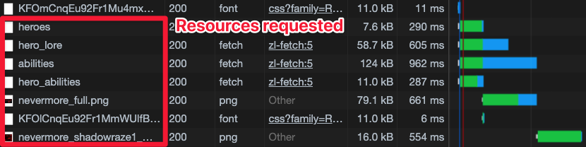
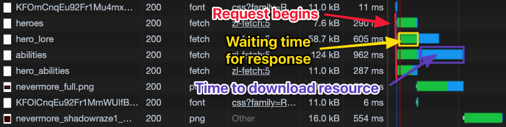
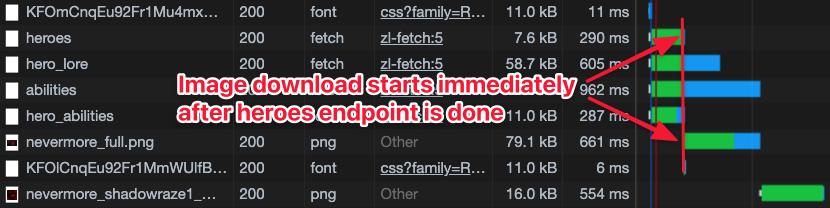
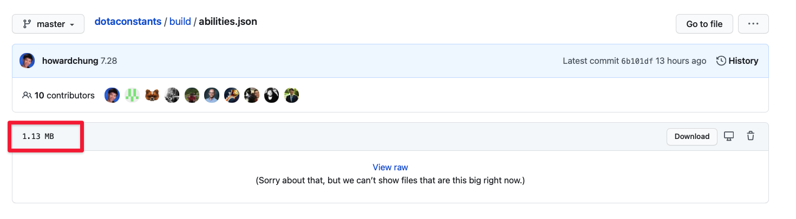
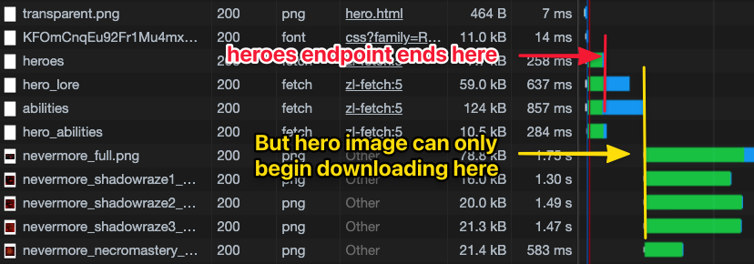

Why not wrap all fetch requests in one Promise.all?
Good question! It certain makes sense to wrap all fetch requests into a single Promise.all function from a code point of view. This makes the code simpler and easier to maintain. But should we really do this?
When we are requesting for multiple resources at the same time, we need to think about how the content gets loaded. To do this, we look at the Network tab inside the Dev tools. You should see a list of the resources we requested.

I want you to pay special attention to the Waterfall column. This column tells us three things for each request:
When the request is sent out (beginning of the green bar)
How long it took to receive a response (the green bar)
How long it took to download the data from the response (the blue bar)

Notice this: The hero image’s request is sent out immediately after we receive information from the heroes endpoint.

Wrapping requests together normally isn’t a huge problem because most requests are small. However, in this case, the abilities request is large. It is 1.13MB while the rest are approximately 100kb.

If we wrap the requests together in Promise.all, we can only begin downloading the hero’s image after we finished downloading the data from the abilities response. This takes considerably longer, which means users have to wait longer for the page to be populated.

If we want to improve loading performance, we have to perform separate fetch requests.
Minimizing Reflows
Reflows refer to layout changes that causes content to jump. One of the tenets in web development is to minimise reflows so users have a better experience.
Our code right now produces up to three layers of reflows. This large amount of reflows is caused by the difference in loading time between different resources.
We need to consider the content-loading order to minisize reflows, so I want to turn your attention to the Network tab once again.
Here, you’ll want to refresh the page and few times and see the order of requests and how the waterfall gets fulfilled.
I see the following patterns:
The hero’s image takes more time to load compared to hero_lore. This slow loading time causes a reflow in the hero’s description.
Occasionally, abilities will load before lore, which causes the abilities section to reflow.
Preventing the hero’s description from reflowing
There are two ways to prevent the hero’s description from reflowing:
We fix the image’s width and height so the description doesn’t have to reflow.
We wait for the image to load before showing the hero’s description
The first method is better since we reduce load time. It’s also easier to execute.
The hero’s image’s width and height is 256px and 144px respectively. We can set these values directly in the CSS.
Note: A better choice is to provide a placeholder image for the Hero’s name, image, and description. This is called a skeleton screen. Here’s Facebook’s skeleton for a post.